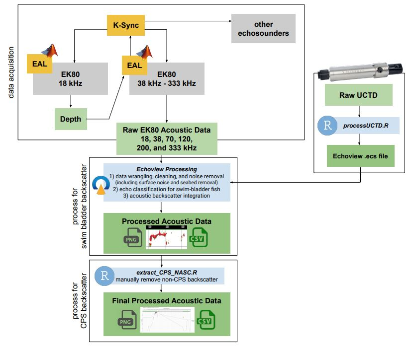
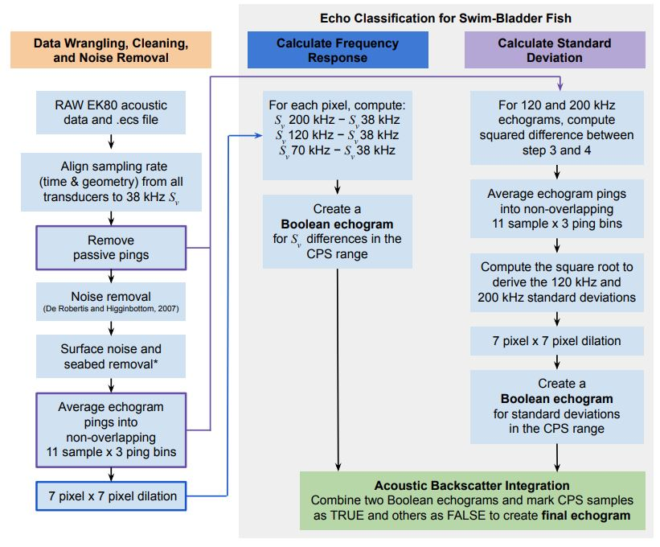

Data Processing
After data aqusition, we identify acoustic echos of schooling CPS using a semi-automated data processing algorithm using Echoview software and in-house Posit code in the estimATM repository. With Echoview, we extract the backscatter of swim bladder fish and process using soundspeed and echosounder calibration values housed inside an Echoview Calibration Supplement (.ecs) file. The Echoview filters and thresholds were based on a sub-sample of echoes from randomly selected CPS schools. We complete the processing with the estimATM package in extract_CPS_NASC.R, where we further refine the backscatter selection to extract only CPS. Here we will cover the Echoview and estimATM semi-automated processing workflow.
Data Processing Overview

Echoview Processing Workflow
In Echoview, we organize, clean, and extract acoustic backscatter of swim bladder fish. There are three key steps to this process:
Data wrangling, cleaning, and noise removal (including surface noise and seabed removal)
Echo classification for swim-bladdred fish
Acoustic Backscatter Integration. The aim of the filter criteria is to retain at least 95% of the noise-free backscatter from CPS while rejecting at least 95% of the non-CPS backscatter.

Integration Start and Integration Stop lines (not pictured, see step 5).Section 1) Data Wrangling, Cleaning, and Noise Removal:
Load RAW EK80 acoustic data and Echoview Calibration Supplement (
.ecs)file into Echoview. The.ecsfile contains soundspeed information calculated from the nearest (temporally and spatially) Underway CTD cast and echosounder calibration parameters. This file is used at the very beginning to convert from power toSv(volume-backscattering coefficient).Align sampling rate (time and geometery) from all transders to the 38 kHz
Sv. Acousticians call this step ‘matching geometry’ of allSvvariables. Making sure pings are aligned from all echosounders is important for calculating the frequency response of backscatter in steps later on.Remove passive-mode pings.
Noise removal: estimate and subtract background noise using the background noise removal function described in De Robertis and Higginbottom (2007).
Surface noise and seabed removal is completed by manually drawing an
Integration StartandIntegration Stopline in Echoview. TheIntegration Startline is drawn at the shallowest depth to include surface CPS schools but exclude transducer ring down and surface noise due to sea state (typically around 5 meters below the transducer face or ~10m depth). TheIntegration Stopline is drawn closest to the seabed to include bottom dwelling animals but exclude any non-living seabed features (typically 3 m above the estimated seabed (Demer et al. 2009) or to the maximum logging range (e.g., 350 m), whichever is shallowest). When drawing the lines, we set the color scale to a minimum Sv threshold of -60 dB which corresponds to a density of approximately three 20-cm-long Pacific Sardine per 100 m3). Doing this helps visually pick out schools from the seabed and from non-swim bladder animals that appear as diffuse scattering layers in the water column. The area of the water column between the two lines sets the depth range that will be integrated for swim bladder fish in steps later on.Average the noise-free Sv echograms using non-overlapping 11-sample by 3-ping bins.
Expand the averaged, noise-reduced Sv echograms with a 7 pixel x 7 pixel dilation. This replaces each averaged datapoint from Step 6 with the maximum datapoint surrounding it in a 7x7 pixel region.
Section 2) Echo Classification for Swim Bladder Fish
Calculate Frequency Response:
For each dilated pixel, compute:
Sv200kHz −Sv38kHzSv120kHz −Sv38kHzSv70kHz −Sv38kHzThe difference between
Svvalues provides the frequency response for those pixels. Swim bladder fish have a unique frequency response which we can use extract those acoustic returns in the next step. Acoustic returns that fall within theSvranges below are flagged as meeting the criteria for typical swim bladder fish, including CPS.Create a Boolean echogram for
Svdifferences in the CPS range:−13.85 <
Sv70kHz −Sv38kHz < 9.89− 13.5 <
Sv120kHz −Sv38kHz < 9.37− 13.51 <
Sv200kHz −Sv38kHz < 12.53
Calculate Standard Deviation:
For 120 and 200 kHz, compute the squared difference between the noise-filtered Sv (remove passive pings) and averaged Sv (11-sample x 3 ping bin averages).
Average the results using an 11-sample by 3-ping window to derive variance.
Compute the square root to derive the 120- and 200-kHz standard deviations (σ120kHz and σ200kHz, respectively).
Expand the standard deviation echograms with a 7 pixel x 7 pixel dilation (same step as Section 1, Step 7).
Create a Boolean echogram based on the standard deviations in the CPS range:
σ120kHz > -65 dB
σ200kHz > -65 dB
Diffuse backscattering layers have low σ (Zwolinski et al. 2010) whereas fish schools have high σ. Intersect the two Boolean echograms to create an echogram with “TRUE” samples for candidate CPS schools and “FALSE” elsewhere. Mask the noise-reduced echograms using the CPS Boolean echogram .
Section 3) Acoustic Backscatter Integration
- Integrate the volume backscattering coefficients (sV , m2 m-3) attributed to CPS over 5-m depths and averaged over 100-m distances;
- Output the resulting nautical area scattering coefficients (sA; m2 nmi-2) and associated information from each transect and frequency to comma-delimited text (.csv) files.
Posit Processing Workflow
The exported .csv file from Echoview contains all swim bladder backscatter which can include non-target species such as rockfish. In order to further refine the acoustic classification to retain only CPS backscatter, the processed .csv file proceeds to the final semi-automated processing step in Posit using extract_CPS_NASC.R, an R-based tool in the estimATM package.
Echoes from fishes with swimbladders (blue points, scaled by backscatter intensity) along an example acoustic transect (top) and the corresponding Echoview echogram image (bottom). In this example, the upper (blue) and lower lines (green) indicate boundaries within which echoes were retained. When the lower boundary is deeper than the seabed (black line), echoes above the seabed are retained. Echoes from deep, bottom-dwelling schools of non-CPS fishes with swimbladders, and from diffuse scatters near the surface are excluded.
The script will open a plot (top) where the acoustics technician can draw new integration start line (blue) and stop line (green). Blue points that fall below the stop line will be excluded while blue points below the start line will be included from the resulting .csv file. The goal is to visually review the Echoview exported echogram image (bottom) and remove backscatter that you believe are not CPS (e.g., rockfishes, hake), possibly contain accidental seabed, or any surface noise amd diffuse scattering layers. The process of picking out CPS from other swim-bladder fish can be tricky as CPS can have a range of characteristics. The Backscatter Identification section goes into detail on this process.
Once you are happy with the two lines, an image will appear showing the results of your editing. If the backscatter needs to be removed, or put back, you can re-run the script and the results will be replaced.
The result is a final .csv with only backscatter information for CPS targets.